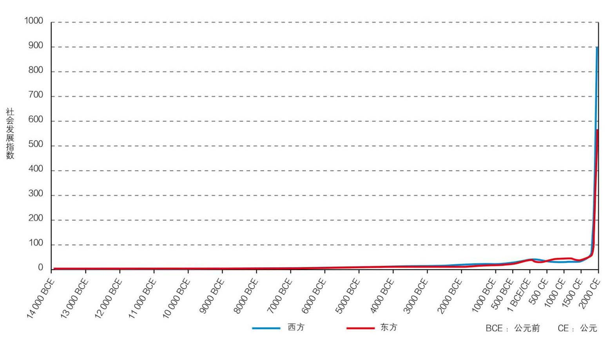
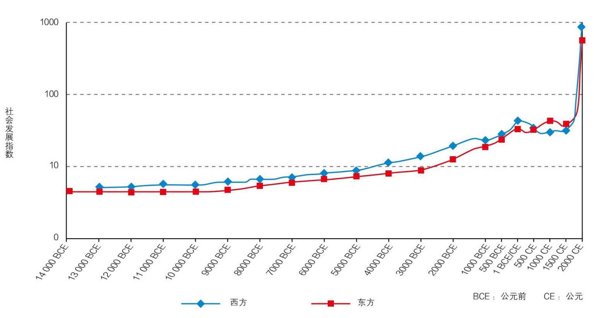
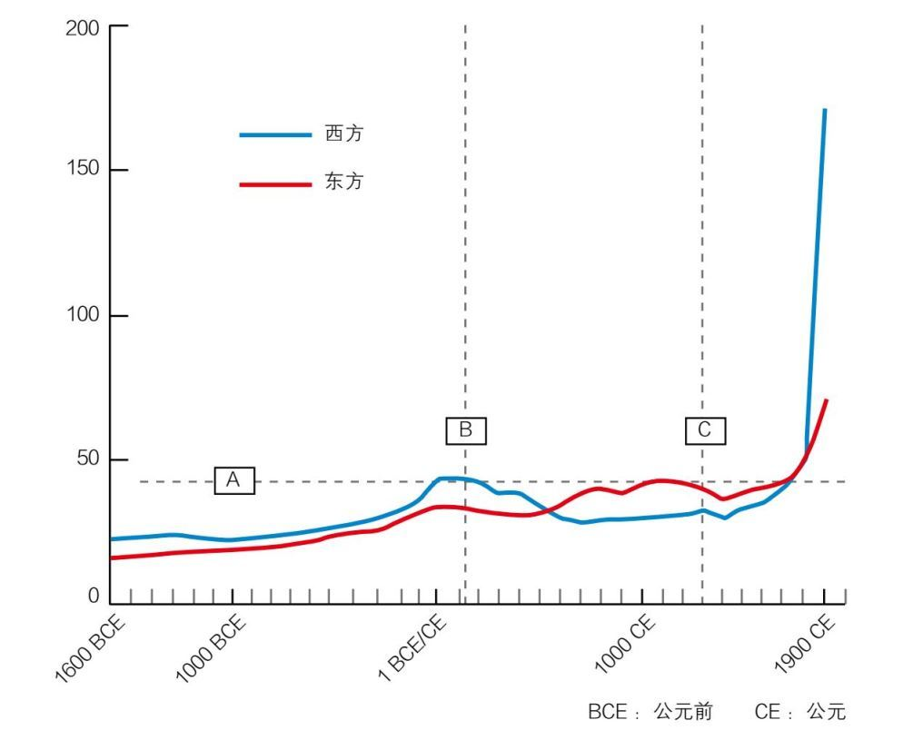

伊恩·莫里斯教授提供了定量记录人类长期文明历史轨迹的计量方式，他把这种计量方式叫做社会发展指数，即一个社会能够办成事的能力。社会由人组成，同为动物的人需要消耗能量。根据能量守恒原理，一个社会要能办成事，需要摄取和使用能量的能力。所以要想衡量社会发展的程度，最重要的指数就是摄取能量和使用能量的能力。下面从计量内容、计量方法、计量对象三个方面解释这种计量方式。
莫里斯把一个社会摄取能量和使用能量的能力分成四个方面：摄取能量的能力、社会组织的能力、信息技术的能力以及战争动员的能力。摄取能量的能力主要指社会中的每个成员每天能够摄取的食物、燃料和原材料的能力。社会组织能力定义为在一个社会里最大的永久性居住单位的人口数，在相当长一段时间里也就是最大城市的人口数。人口越多，对社会组织的能力需求就越高。社会组织的成员每天都需要交流、储存、记忆各种各样的信息，因此信息技术也是人类使用能量的重要方式。战争作为人类消耗能量的重要来源更不必赘述。这四个方面并非人类活动的全部，却是最具有代表性的人类摄取和使用能量的方式。更关键的是这四个标准能够在一切社会中横向比较，也可以在很长的时间范围里纵向比较。因为人类的整个进化史，实际上就是摄取能量和使用能量的历史，而组织社会、形成人口中心、交流信息、进行战争也是所有人类社会都会进行的最重要的活动。
在考虑计量方法时，莫里斯选择了指数的方法，把测量时间的起点定在公元前14000年，终点定在公元2000年；把要测量的四个方面分值加总，定公元2000年的数值为1000分，平均分给四个方面，将公元2000年代表东西方最高水平的每项社会发展指数定为满分250分。比如西方最发达的地区美国，在公元2000年平均每人每日能量摄取大约是228000大卡。日本作为公元2000年东方最发达地区，平均每日每人能量摄取大约是104000大卡。按此比例，如果美国是250分，日本就是114分，以此类推。要获取这些数据，时间越早就越困难，但是在人类历史的早期，四个指数增长速度都很慢；而且，相对于公元2000年的人类社会组织、信息技术及战争动员能力，人类早期在相当长的时间里，这方面的分数一直接近为零。所以社会发展指数在早期其实也就是人类摄取能量的能力。这里计量的时间间隔在早期可以拓宽。比如公元前14000年到公元前4000年，每1000年取一次数据，这段时间分值变化的幅度很小。从公元前4000年到公元前2500年，可以采集的数据增加，这期间每500年取一次数据。从公元前2500年到公元前1500年，每250年取一次数据。从公元前1500年到公元2000年，每100年取一次数据。进入现代以后，以科学家提取数据的能力完全可以做到每年甚至每月精确地提取一次。但是要对16000年的数据都进行比较精确的估算，就需要考古学、气象学、物理学、生物学在过去几十年取得的成果辅助。
莫里斯把测量对象定为公元前9600年以后欧亚大陆上农业文明形成时出现的两大文明中心，以及此后传承这两大中心的各个文明中心。在不同的历史阶段，东西方文明的主要中心也有所变化，因此他选取的是当时在东西方两大文明中最为先进的地区。比如西方，最初是在两河流域和约旦河附近的侧翼丘陵区（Hilly Flanks），之后转移到美索不达米亚、叙利亚、埃及、地中海、罗马，再转移到巴尔干半岛，然后是地中海、南欧、西欧，最后到了美国。东方文明的中心则是从黄河流域开始，进入到黄河与长江冲积平原中间，之后转移到长江流域，到了20世纪之后，转移到中国东南沿海和日本，公元2000年左右则是以日本为代表。由于四个社会发展的计量指标对东西方两地都非常适用，同样的数据可以用来计量长时间的人类历史。
值得一提的是，史前的记录有很多数据需要估算，因此考古发现是重要的信息来源。考古学是一门很年轻的学问，现在通用的方法叫地层学（Stratigraphy）研究，直到1870年以后才开始使用。1950年以后科学家开始使用放射性碳定年法，给考古学带来实质性的飞跃。70年代以后，人们对于史前的记录逐渐有了一套系统的知识体系。
莫里斯和他的团队通过大量的工作，将人类社会发展的指数绘制成一系列图表，这些图表有助于我们直观了解东西方社会发展的历史轨迹。

从图1首先可以看到，一直到公元前3000年左右，东西方的发展几乎看不出任何差别，在这之后虽然两方的发展曲线都发生了一些变化，但仍然非常缓慢。而公元1800年以后，社会发展的轨迹像坐了火箭一样，呈现出飞跃式发展。接下来，在不失真的情况下，将之前的图表数据做一个对数处理，即图2。这样可以把东西方的比较看得更清楚一些。
再看公元前1600年到公元1900年的这张图表（图3）。图3呈现的历史是文字记载相对清晰、人们比较熟悉的一部分历史。结合图2、图3，可以看到从公元前14000年左右，到公元500年左右，西方一直领先东方。大约从公元541年左右，东方开始赶上西方，从此在1200多年里一直领先西方，直到1773年左右。但是从公元1800年以后，西方不仅追上了东方，而且率先进入了一个飞速发展期，把东西方之间的差异扩大成对全球的统治。东方的社会发展指数也从20世纪开始起飞，今天虽然仍然大大落后于西方，但是已经显示出能够追上西方的迹象，这就是近16000年的人类文明在东西方两地的轨迹。之后几篇将重点解释人类文明轨迹的成因，东西方在文明发展过程中的异同，公元1800年以后社会呈现火箭式飞速发展的原因，及东西方的比较，进一步解释西方为什么能够在近代统治世界，解释中国在近代的落后。只有在理解历史轨迹和成因的基础上，才能回答今天中国如何能够赶上西方的问题，总结中国现代化的特性，展望东西方的未来。

